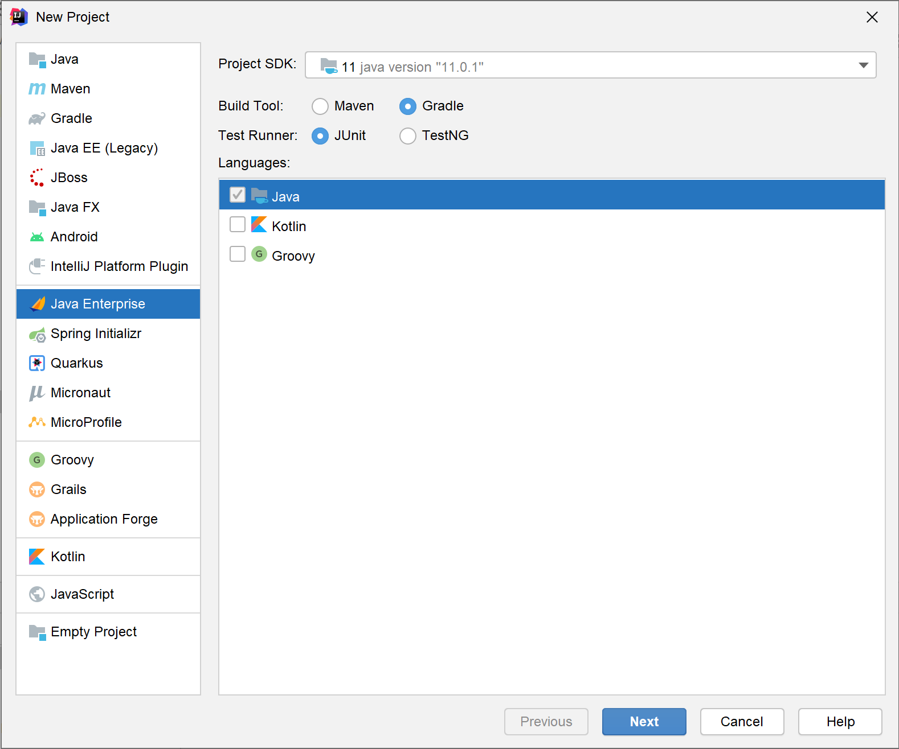

类型：笔记
2020.11.24 创建编写gradle部分
项目管理
代码环境管理（包管理）
下面列出常用的代码环境管理工具（一般也成为包管理工具）并给出说明
| 管理工具 |
使用语言/项目 |
说明 |
| npm |
javascript/typescript |
核心文件package.json |
| maven |
java/kotlin |
核心文件pom.xml |
| gradle |
java/kotlin/android |
核心文件build.gradle或者build.gradle.kts |
| pip |
python |
核心文件requirements.txt |
| nuget |
.net系 |
核心文件.xxproj |
| pub.dev |
dart |
核心文件pubspec.yaml |
| Luarocks |
lua |
核心文件.rockspec |
| canon |
cpp |
核心文件CMakeLists.txt |
| 人工管理(lib) |
任何语言 |
使用拷贝类库/包的方式进行管理 |
gradle
选择build.gradle和build.gradle.kts
其实两者只有语法的区别，但是由于build.gradle.kts是近期才推出的，成熟的教程比较少，因此还是推荐使用build.gradle
Gradle常用于Java、Kotlin的项目管理，Gradle基于使用在JVM上的敏捷语言Groovy开发。
使用人群
适用于自动化地进行软件构建、测试、发布、部署、软件打包的项目。
学习前提
你需要Groovy语言基础，对Java应用开发有一定的了解。
如何创建Gradle项目
我该选择什么IDE
为了发挥Gradle更强大的功能，我们推荐使用IntelliJ IDEA做为开发的IDE。
打开IntelliJ IDEA，点击File>New>Project...
然后选择Java Enterprise，然后BuildTool选择Gradle，语言根据自己的习惯进行选择。
之后根据自己的需求添加对应的功能，在这里不再介绍。

build.gradle简介
下面是一个struts2项目的build.gradle文件
1
2
3
4
5
6
7
8
9
10
11
12
13
14
15
16
17
18
19
20
21
22
23
24
25
26
27
28
29
30
31
32
33
34
35
36
37
38
39
40
41
42
43 | plugins {
id 'java'
id 'war'
}
group 'cn.edu.zjut'
version '1.0'
repositories {
maven { url 'https://maven.aliyun.com/repository/google' }
maven { url 'https://maven.aliyun.com/repository/public' }
mavenCentral()
}
ext {
junitVersion = '5.6.2'
}
sourceCompatibility = 1.8
targetCompatibility = 1.8
dependencies {
compileOnly('javax:javaee-web-api:8.0.1')
// 加入struts2-core核心库
compile group: 'org.apache.struts', name: 'struts2-core', version: '2.5.25'
// 使用dojo扩展库
compile group: 'org.apache.struts', name: 'struts2-dojo-plugin', version: '2.3.37'
// commons-logging
compile 'commons-logging:commons-logging:1.1.1'
// hibernate
compile 'org.hibernate:hibernate-core:5.4.22.Final'
// mysql
compile 'mysql:mysql-connector-java:8.0.22'
testImplementation("org.junit.jupiter:junit-jupiter-api:${junitVersion}")
testRuntimeOnly("org.junit.jupiter:junit-jupiter-engine:${junitVersion}")
}
test {
useJUnitPlatform()
}
|
换国内镜像源
其中比较重要的是第10行，由于国内访问mvnrepository比较慢，因此经常使用国内的镜像源，下面列出常用的国内镜像源。
| 提供商 |
地址 |
备注 |
| 阿里云 |
https://maven.aliyun.com/repository/public |
新地址 |
| 阿里云 |
https://maven.aliyun.com/repository/google |
与Android有关的仓库地址 |
| 阿里云 |
https://maven.aliyun.com/repository/spring |
与Spring有关的仓库地址 |
| 阿里云（旧地址） |
http://maven.aliyun.com/nexus/content/groups/public |
旧地址，不推荐使用 |
常用依赖
在build.gradle的dependencies{}内常常配置项目需要依赖的包。我们可以通过访问mvnrepository(仅包含了central仓)或者mavensearch查找需要的包，推荐第1个链接，因为相对来说更新。
编写依赖语句有两种方式，以下文做例子：
| // 加入struts2-core核心库
compile group: 'org.apache.struts', name: 'struts2-core', version: '2.5.25'
// hibernate
compile 'org.hibernate:hibernate-core:5.4.22.Final'
|
下面列出常用的依赖包以及更新的日期
update:2020/11/21
1
2
3
4
5
6
7
8
9
10
11
12
13
14
15 | // ..with web
// struts2-core,update:2020/9/17
compile group: 'org.apache.struts', name: 'struts2-core', version: '2.5.25'
// struts2-core-dojo,update:2018/12/30
compile group: 'org.apache.struts', name: 'struts2-dojo-plugin', version: '2.3.37'
// commons-logging,update:2014/6/5
compile group: 'commons-logging', name: 'commons-logging', version: '1.2'
// hibernate,update:2020/11/17
compile group: 'org.hibernate', name: 'hibernate-core', version: '5.4.24.Final'
// hibernate-c3p0,update:2020/11/17
compile group: 'org.hibernate', name: 'hibernate-c3p0', version: '5.4.24.Final'
// mysql-connector-java,update:2020/10/17
compile group: 'mysql', name: 'mysql-connector-java', version: '8.0.22'
// mybatis,update:2020/10/6
compile group: 'org.mybatis', name: 'mybatis', version: '3.5.6'
|
Q&A
implementation和compile的区别
implementation构建的包将不对外部公开，compile构建的包将会外部公开。
不指定版本
这种情况下将会使用最近发行的版本，由包自身配置。
其他参考教程
Java Gradle入门指南之依赖管理（添加依赖、仓库、版本冲突）
android gradle依赖：implementation 和compile的区别